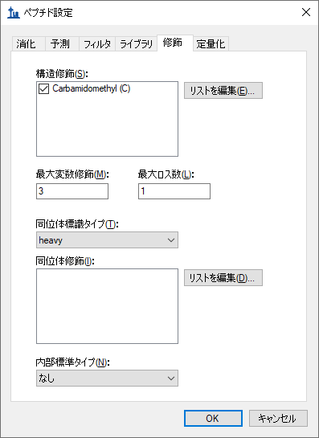
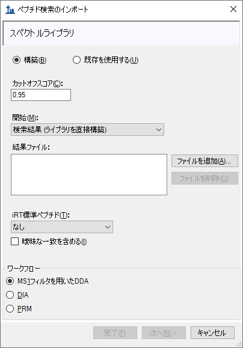
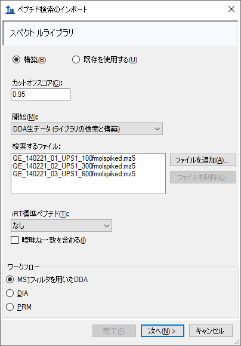
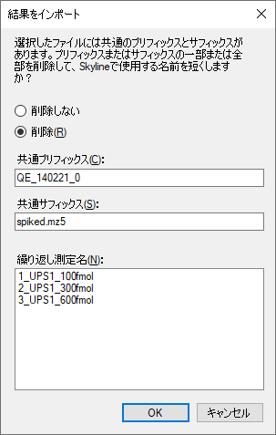
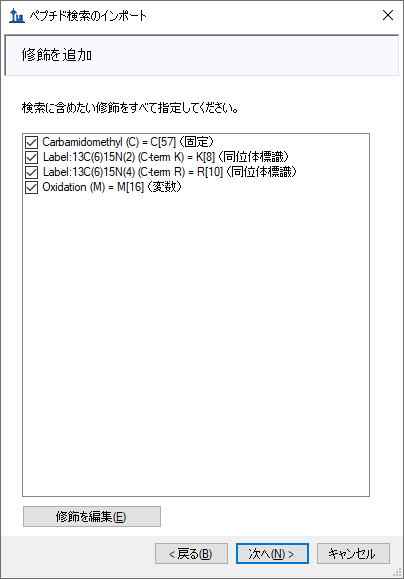

Skylineを用いたターゲット質量分析は、Skylineドキュメントにインポートした質量分析計の生データの有益な情報を視覚的に表示します。測定対象となるペプチドとトランジションの最適化や積分境界の調整も可能です。SkylineはSRM（selected reaction monitoring：選択反応モニタリング）またはMRM（multiple reaction monitoring: 複数反応モニタリング）質量分析データの定量解析ソフトとして開発されましたが、新たにMS1スペクトルの時間-強度クロマトグラムが抽出できるように機能が拡張され、データ依存MS/MSモードで計測されたデータを使用した質量分析測定によるペプチド定量データも使用できるようになりました。
Skyline MS1フルスキャンフィルタでは、質量分析計をデータ依存測定 (DDA) モードで操作した探索的なプロテオミクス実験のデータセットのインポートをサポートしています。生データのインポート後にSkylineの新しい機能や従来の機能を利用すると、多数の繰り返し測定データにおけるペプチドプリカーサーMS1シグナルの定量が容易になります。Skylineはデータの視覚化に非常に優れているため、このモードは他の「標識なし」の定量化ツールからの定量出力を視覚化し、よりよく理解するためにも使用できます。
本チュートリアルは、Skylineを使ってDDAデータにおけるMS/MSスペクトルのペプチドスペクトル合致を実施したいときにSkyline MS1フィルタを有効に使用するために重要な以下の分野を網羅します。
Skylineは、ターゲット質量分析研究のための、ベンダーに依存しないプラットフォームの提供を目指しています。Skylineは、Agilent、Bruker、SCIEX、島津製作所、Thermo-Scientific、Watersといった装置装置ベンダーからMS1フィルタの生データをインポートできるため、ここで得る専門知識はこれらのベンダーの装置を使用するあらゆる質量分析研究室に譲渡可能です。
チュートリアルを始める前に、以下のzipファイルをダウンロードしてください。
https://skyline.ms/tutorials/DdaSearchMS1Filtering.zip
この中のファイルを、以下のコンピュータ上のフォルダに解凍します。
C:\Users\brendanx\Documents
これにより以下の新しいフォルダが作成されます。
C:\Users\brendanx\Documents\DdaSearchMS1Filtering
本チュートリアルを開始する前に、Skylineをすで使用している場合は、Skylineをデフォルト設定に戻すことをお勧めします。デフォルト設定に戻すには、以下の操作を行います。
Skylineのこのインスタンスのドキュメント設定がデフォルトにリセットされました。
本チュートリアルはプロテオミクスに関するものであるため、以下の操作を行うとプロテオミクス用インターフェイスを選択できます。

Skylineは、ウィンドウの右上隅のタンパク質アイコン  で表示される分子モードで動作しています。
で表示される分子モードで動作しています。
この空のドキュメントは多数の方法で編集できますが、本チュートリアルでは質量分析計データ依存測定（DDA）データファイルの検索、ターゲットペプチドの設定、これらのファイルからのクロマトグラムのインポートという一連の流れをガイドする、ウィザードというフォームを使用します。
DDA検索を始める前に、Skylineがデフォルトで使用する内部標準を変更する必要があります。
[ ペプチド設定 ] フォームは以下のようになります。

[ ペプチド検索をインポート ] ウィザードを使用することで、DDAデータファイル内のMS/MSスペクトルからペプチド検索を実行できます。
まず、以下の操作を行って新しいドキュメントを保存します。
[ ペプチド検索をインポート ] ウィザードを以下のように開始します。
以下のようなフォームが表示されます。

[ 構築 ] オプションは、DDA検索エンジンからの出力（CometからのpepXMLファイル、Mascotからの.datなど）に、また [ DDA検索を実行 ] オプションは生データ（RAW、WIFF、*.d、mzML、mzXMLなど）に対して有効です。本チュートリアルのmz5ファイルは、質量分析計が生成した元のプロファイルThermo RAWファイルよりも高速でダウンロードできるようにセントロイド化されています。
次の操作を行って含まれているDDA mz5ファイルを検索に追加します。
ウィザードフォームは以下のようになります。

3つのmz5ファイルに共通のプリフィックスをどう取り扱うかを尋ねるフォームが表示されます。

ウィザードが [ 修飾を追加 ] ページを開きます。ここでは、ドキュメント中のDDA検索に含めたいアミノ酸修飾すべてがリストされています。ここでは、固定修飾と変数修飾を区別することが重要です。固定（静的とも呼ばれる）修飾は、常に指定されたアミノ酸に適用されます。たとえば、Carbamidomethyl Cではデータ中のすべてのシステインがアルキル化すると予測されるため、通常は固定修飾として扱われます。酸化はサンプルの取り扱いによって運次第であるため、Oxidation Mはほぼ常に変数修飾として扱われます。Skylineの検索は、同位体標識をほぼ常に変数として扱いますが、[ 修飾を編集 ] ボタンをクリックすれば他の修飾を固定として扱うか変数として扱うかを変更できます。
また、このページからドキュメントに修飾を追加することもできます。ドキュメントがデフォルトにリセットされているため、リストはCarbamidomethyl (C)のみで開始となります。
これらのデータはSILAC標識であるため、ここでヘビー標識の修飾を追加する必要があります。これらを追加するには、以下の操作を行います。
[ 同位体修飾を編集 ] フォームは以下のように表示されます。
以下の手順を行って2つ目の同位体修飾を追加します。
アルギニン分子内にあるすべての炭素原子に13C を、すべての窒素原子に15Nを使用するように設定するため、 [ 13C ] および [ 15N ] のチェックボックスが自動的にオンになっており、総質量シフトは10ダルトンとなります（6x 13C + 4x 15N）。
[ 同位体修飾を編集 ] フォームは以下のように表示されます。
Skylineは13Cおよび15Nを用いて、モノアイソトピック質量と平均質量のの計算を自動的に行います（リジン（K）については約8ダルトン、アルギニン（R）については約10ダルトンとなります）。ヘビー修飾の追加を終了するには、以下の操作を行います。
今度はOxidation (M)を構造修飾として追加します。
この時点で、[ 修飾を追加 ] ページは以下のようになります。

ウィザードが [ フルスキャン設定を行う ] ページに進みます。
このページの他のフィールドは、本チュートリアルで使用可能なデフォルト設定のままにしておいてください。ウィザードは以下のようになります。
ウィザードの [ FASTAををインポート ] ページに移動します。本チュートリアルでは、先頭に追加されたシグマアルドリッチのUniversal Proteomics Standard (UPS)のシークエンスでヒトタンパク質FASTAを使用します（SkylineがUPSと非UPSタンパク質の間で共有されるあらゆるペプチドにこのアクセッション番号を使用できるようにするため）。FASTAを選択するには、以下の操作を行います。
ウィザードは以下のようになります。
ウィザードが [ 検索設定の調整 ] ページを開きます。ここでは、DDA検索に最も重要なパラメータを設定できます。本チュートリアルでは、以下の操作を行います。
フォームは以下のようになります。
[ DDA検索 ] ページが検索の進捗状況を示します。このページの [ 検索をキャンセル ] ボタンをクリックして検索をキャンセルすることもできます。
検索が完了したら、以下の操作を行います。
Skylineが検索結果からスペクトルライブラリの構築を開始します。ライブラリの構築が完了するとメッセージボックスが表示され、信頼性が等しい複数の異なるペプチドと解釈することのできるスペクトルがあり、これらのペプチドは無視されるという警告が表示されます。
Skylineはその後、ライブラリのドキュメントへのインポートを開始します。インポートが終了すると、ドキュメントにタンパク質を含む基準を設定するようにプロンプトされます。
タンパク質がドキュメントにインポートされると、メインSkylineウィンドウで [ ターゲット ] ビューの上部にUPSタンパク質が表示されます。そこには6,025個のタンパク質が表示されます（ステータスバーでカウントされる）。Skylineはまた、クロマトグラムの抽出を開始し、進捗状況を [ 結果をインポート ] フォームに表示します。クロマトグラムの抽出の完了には数分かかります。ただし以下の最終ステップ以外はインポート中にそのまま操作を続けることができます。
Skylineウィンドウは以下のようになります。
このドキュメントは、DDAモードでの測定結果3件のインポートを含み、MS1フィルタ向けにフル設定されています。インポートウィザードで [ MS/MSのIDの時間（5分）のスキャンのみを使用します ] の設定が選択されているため、このビューのクロマトグラムの表示時間範囲は約10分（133～143分）となっています。SkylineドキュメントをMS1フィルタ向けに設定しているため、三連四重極SRM測定結果にはプロダクトイオントランジション（y-イオンなど）の代わりに、ペプチドTGEGFLCVFAINNTKのプリカーサー - 835.914++、プリカーサー[M+1] - 836.4154++、[M+2] - 836.9164++などの異なるプリカーサー同位体ピークが表示されることに留意してください。
特に特定のMS1フィルタデータの視覚化をさらに向上させるその他の複数の機能を設定するには、以下の手順を実施します。
これにより、ピークが最大ピークと共溶出しているように見えるかどうかに関わらず、Skylineではピークグループ内のすべてのクロマトグラム（ここではプリカーサーイオンM、M+1、およびM+2）が合わせて積分されます。以前のように積分ピーク面積に影響することはなくなりました。
グラフを含む次のようなウィンドウが表示されます。
以下の操作を行うと、[ ピーク領域 ] ウィンドウを好きな場所にドッキングできます。
Skylineウィンドウは以下のようになります。
ここからは、MS1フルスキャンフィルタのチュートリアルを見てDDAデータを使った作業についての詳細を学ぶことができます。